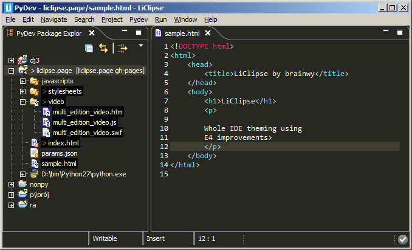

Lightweight editors, theming and usability improvements for Eclipse
Note that LiClipse is still only available for Beta testers that got related perks on its Indiegogo campaign but it should be available for everyone shortly.With it, users get out of the box:
Colors are not only kept consistent among all editors by using the eclipse-color-theme plugin, but the IDE can also themed as a whole, allowing for dark themes that are kind to your eyes.

LiClipse supports many languages out of the box:
CoffeScript, C/C++, CSS, Django Templates, HTML, JavaScript, Python, RST, SCSS, XML.
All those languages feature syntax highlighting, template completion, outline, select/deselect scope, comment/uncomment, auto-indent, linked edition, multi-edition, among others.
As a note, some editors have improved support:
The HTML editor has advanced context-based code-completion.
The HTML, XML and JavaScript editors have code-analysis and code-formatting features.
At this point, the major improvement is multi-edition supporting all editors (such as PyDev, JDT, etc).
See: Multi-Edition Video for details
Besides the multi-edition (which can be triggered in a Ctrl+K search or with the mouse with Ctrl+Alt+Mouse Click), the rectangular edit is also improved to be triggered with Alt+Click (and stopped with escape).
Eclipse has a myriad of useful plugins, but it can be difficult to always keep up-to-date with all of those, besides finding them out can be time-consuming, so, LiClipse bundles the following plugins in a single package: Workspace Mechanic, Eclipse Color Theme, StartExplorer, AnyEdit and PyDev (note that PyDev does not follow the rule of being useful for everyone as the other plugins, but LiClipse itself is based on reusing parts of the PyDev codebase).